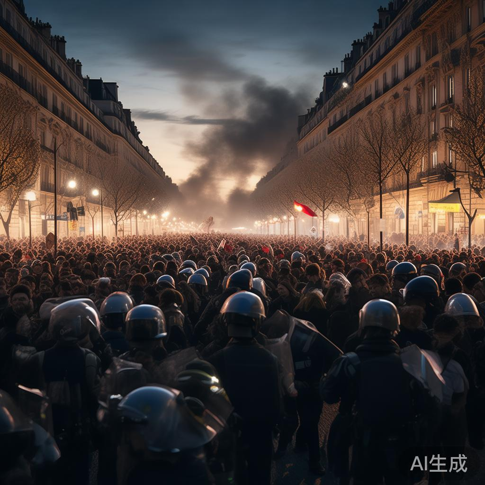
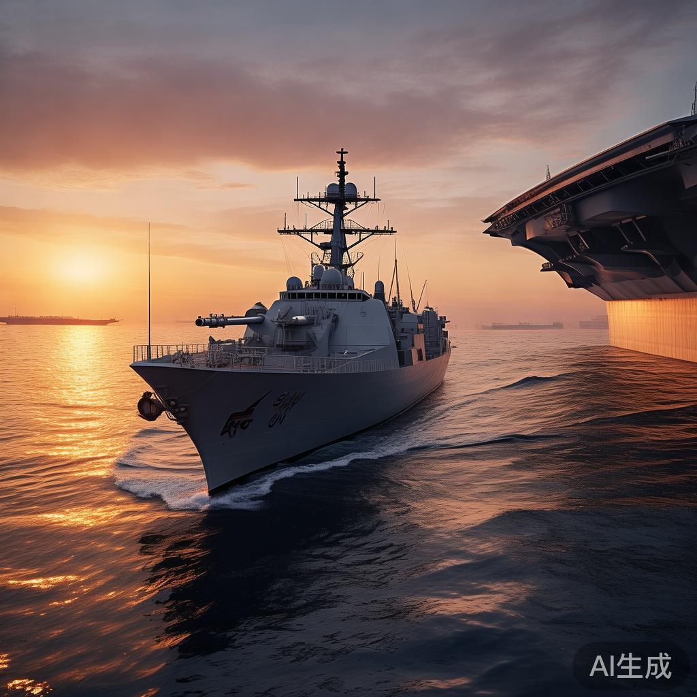
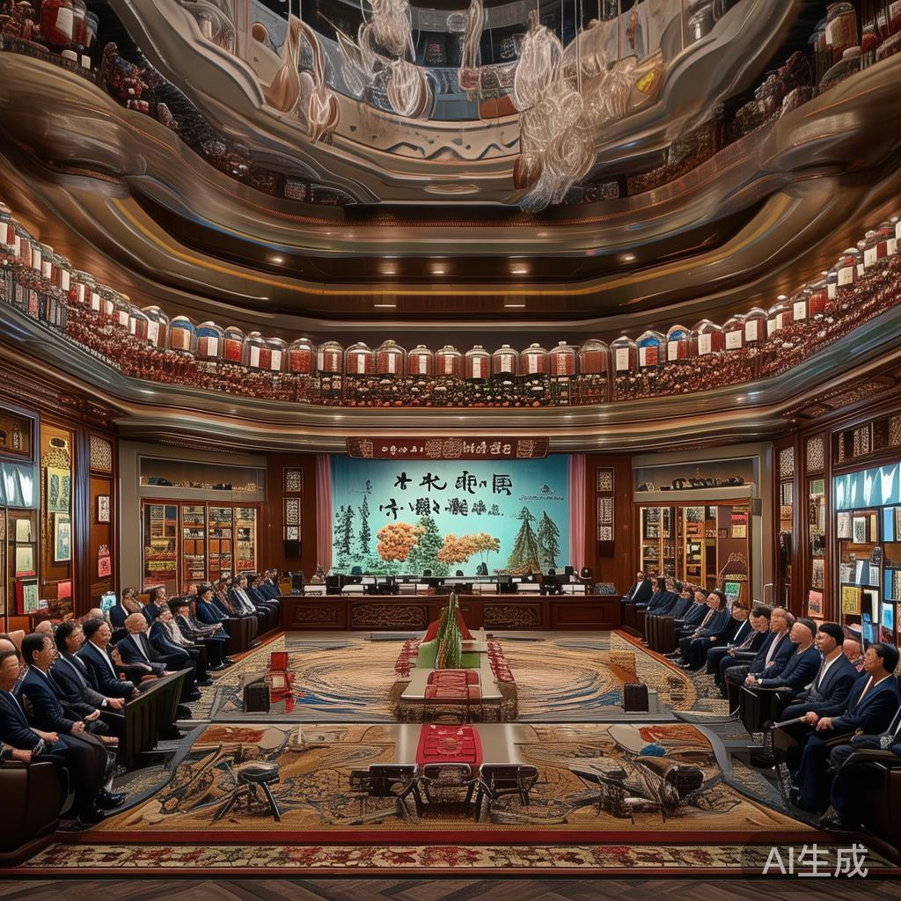
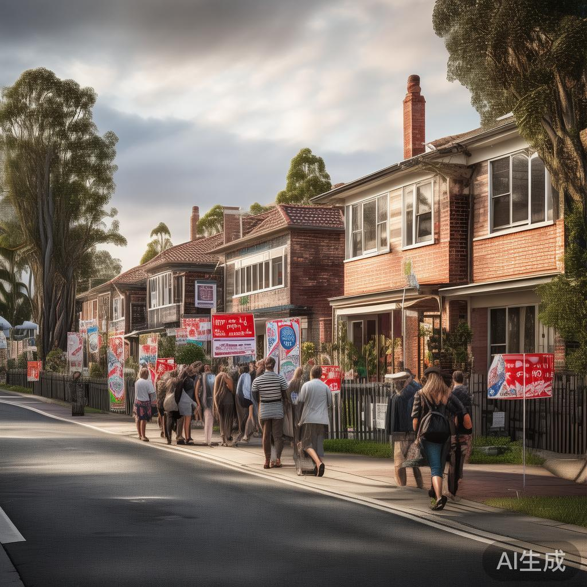
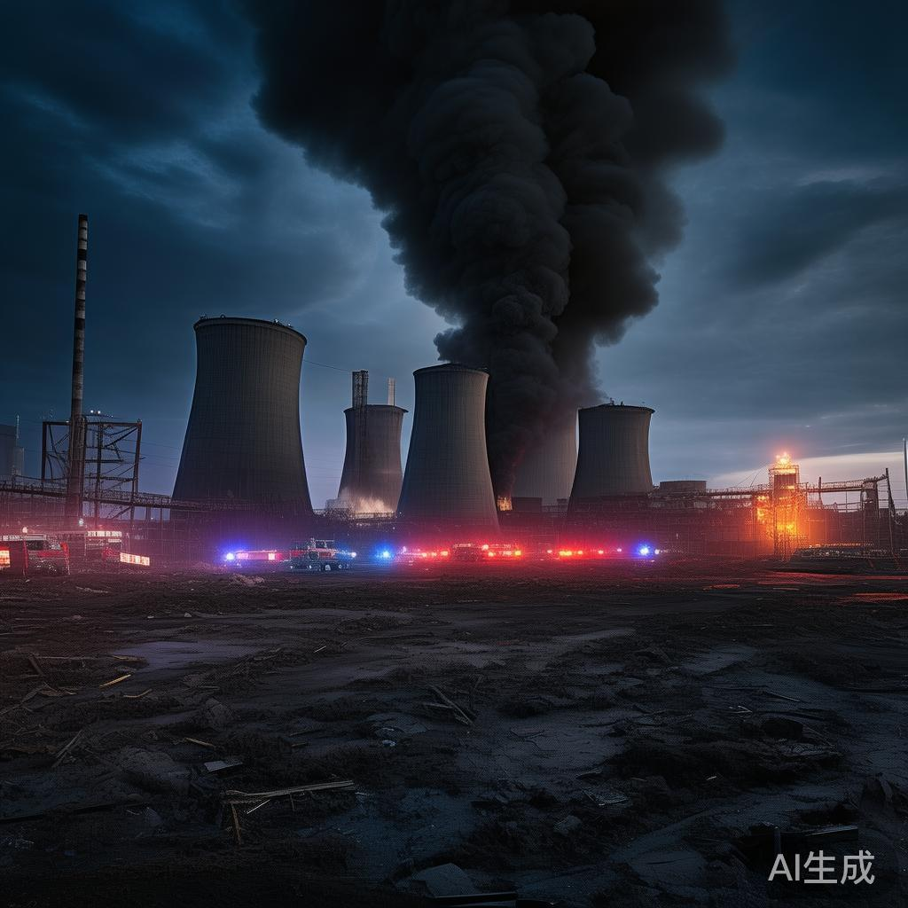
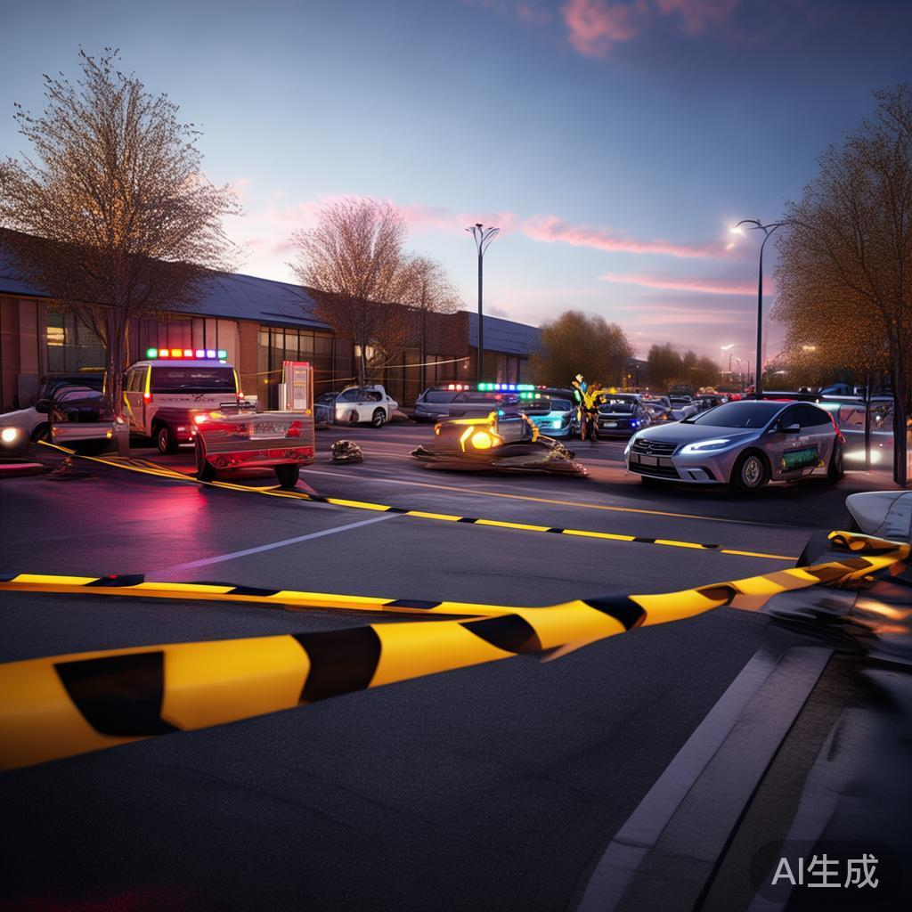
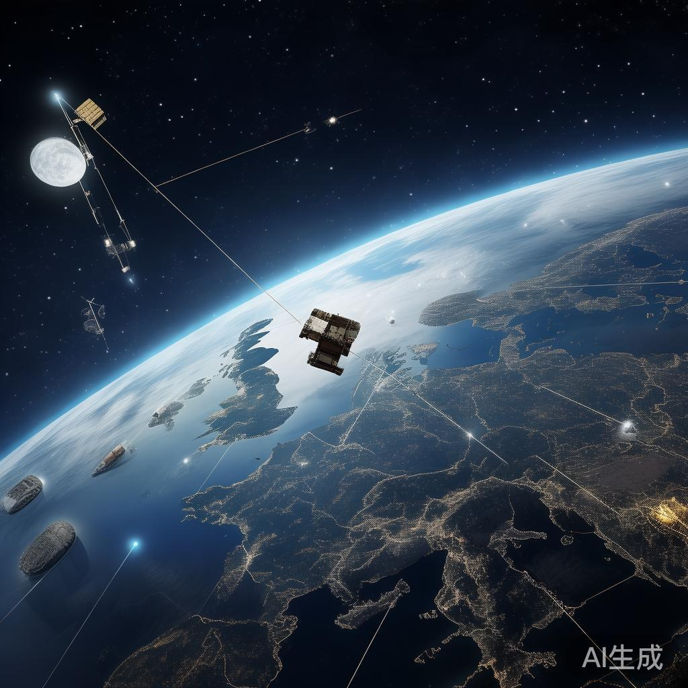
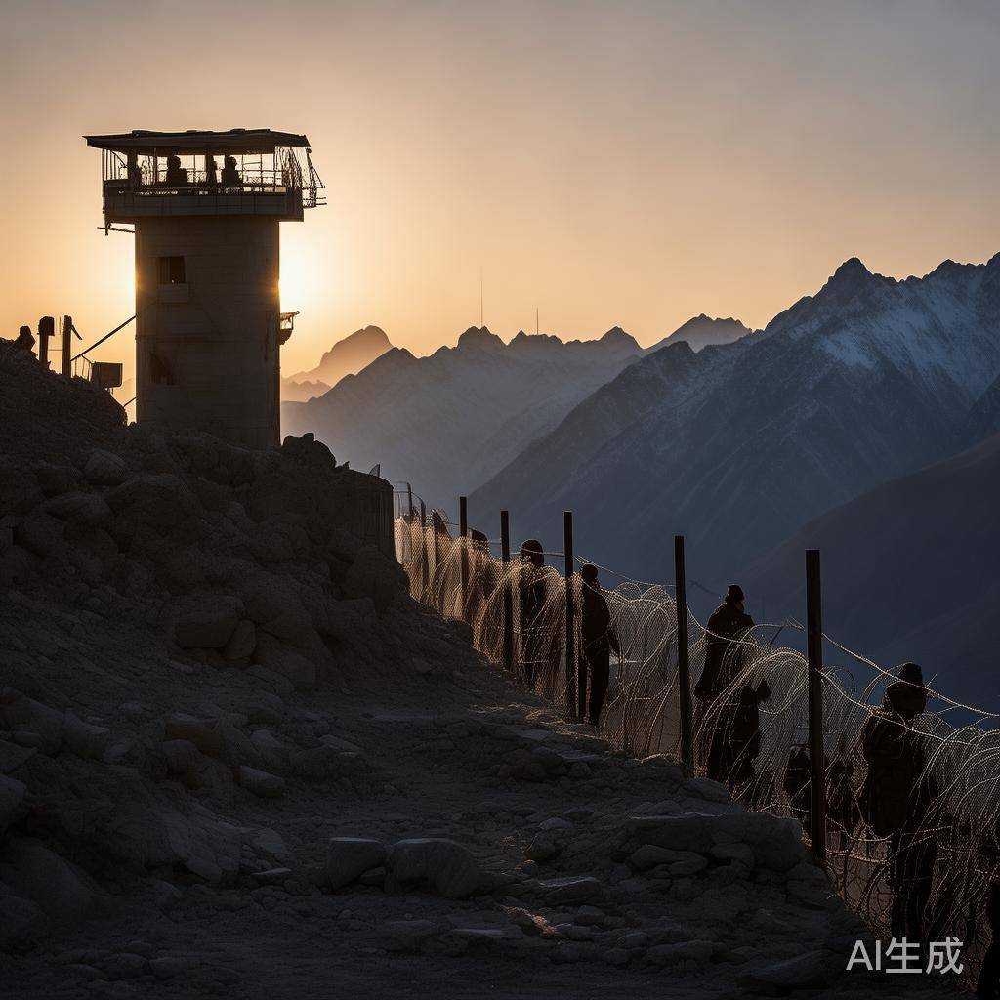

01
法国爆发全国性抗议骚乱 55万人上街超1200人被捕
法国内政部称全法约55万人参加抗议，总工会统计达80万。巴黎、里昂、马赛等多地爆发骚乱，超1200人被捕、150名警察和宪兵受伤，利摩日市政厅遭纵火部分坍塌，巴黎一奢侈品门店被哄抢，抗议人群一度逼近总统府约200米。
国际


法国内政部称全法约55万人参加抗议，总工会统计达80万。巴黎、里昂、马赛等多地爆发骚乱，超1200人被捕、150名警察和宪兵受伤，利摩日市政厅遭纵火部分坍塌，巴黎一奢侈品门店被哄抢，抗议人群一度逼近总统府约200米。
在2026全国高性能计算学术大会上，今年刚建成的我国首个全国产十万卡AI超集群真机亮相，算力规模达十万卡级别，被形容为'能装一个宇宙'，并现场发布十大重要应用成果，标志我国自主AI算力基础设施迈上新台阶。
高盛Prime经纪业务数据显示，10月8日至14日当周，对冲基金正加速撤离AI交易，持续近两年的AI多头交易遭遇一场猛烈逆转。机构资金调仓迹象明显，AI板块短期波动风险显著上升。
也门胡塞武装称18日凌晨在哈杰省上空击落一架沙特'卡里亚尔'武装侦察无人机，此前还击落一架'阿帕奇'武装直升机。沙特联军称拦截飞向利雅得的无人机及两枚弹道导弹，并空袭塔伊兹省造成至少9人死亡。利雅得等多城预警警报发布后已解除。
今年第30号台风'蔷琵'已于17日夜间由强台风级加强为超强台风级，今天早晨5点钟其中心位于关岛西偏南方向约90公里的西北太平洋洋面上，未来或将继续加强，后续路径走向需密切关注。

特朗普宣称美国已在军事上击败伊朗并摧毁其核能力，并再次威胁打击伊朗镐山地下设施。美中央司令部称，海上封锁已使伊朗损失约250亿美元原油收入，已引导138艘商船改道以确保合规，德黑兰开始扣发工作人员薪资和养老金。
为打击逃税，日本拟拦截来源无法追溯的黄金，并将禁止无溯源黄金出口。分析认为新规将影响区域黄金贸易流向，合规溯源要求或推高交易成本，暗盘金价一度跌破4150美元/盎司。
美国近期一系列对俄政策调整引发乌欧不满：达成柴油供应协议、暂缓新一轮对俄制裁后，特朗普政府又提议将欧洲恢复采购俄天然气纳入乌克兰和平协议，遭德国明确反对。特朗普称对俄制裁决定对美国有利。
马斯克在接受传记作家艾萨克森访谈时承认，其在政治事务中'有些偏离正轨'，远离旗下公司的时间超出了应有程度。他还表示，曾领导的政府效率部（DOGE）未能从政府内部解决财政赤字问题。

2026世界传统医药大会17日在北京开幕，主题为'科技赋能 融合发展：推动人人享有健康'，李强出席开幕式。大会将发布多项重要成果，中国传统医药经验将为全球健康治理提供借鉴。
伊朗外长阿拉格齐周六在巴格达伊斯兰合作组织会议期间会见土耳其外长菲丹，此前还会见埃及外长。他表示德黑兰愿协助结束沙特与也门之间的冲突，并愿提供一切必要协助，称霍尔木兹海峡交通能否恢复正常'选择权在美国手中'。

受15年高位利率拖累，澳大利亚住房市场活跃度被抑制，上周房屋拍卖数量下滑，拍卖活动减少。房产研究机构称，高利率环境正持续压制澳洲楼市成交与买家出价意愿。

俄国防部称17日凌晨对乌克兰多地实施大规模打击，目标为为乌军方提供保障的相关企业和能源设施，乌克兰总统泽连斯基随后发声回应。这是俄军近期再度扩大打击范围，能源基础设施受损严重。
据北部湾港集团消息，截至10月16日24时，平陆运河通航以来集团完成运河货物过货量突破100万吨。这条连通西江流域与北部湾的江海联运大通道正加速释放通航效益。

美国堪萨斯州威奇托市一处体育中心17日发生车辆冲撞事件，造成至少两人死亡、多人受伤；同日纽约曼哈顿中城一处地铁站发生枪击事件，致1人死亡。警方称两起事件均不存在持续威胁，正进一步调查。
韩国边缘AI芯片初创企业DeepX正依托先发战略布局全球物理AI市场，积极拓展与英特尔、AMD、三星电子、现代汽车集团的合作，加速边缘AI芯片在机器人、智能汽车等场景的商业化落地。

美国国务卿鲁比奥表示，星链是商业产品，按商业产品进行监管和处理；星盾则是供美国军方使用的国防产品，目前不向乌克兰提供。他还称，白宫无人下令降低乌克兰接入星链的速度。
美股暗盘芯片与存储股走低：美光跌超6%，闪迪跌3.6%，SK海力士跌超3%，AMD跌破520美元、日内跌2.8%。AI交易拥挤担忧持续，存储与算力产业链短期波动加剧。
法国外长巴罗称，法国北部欧努瓦艾姆里市市长贝尔纳·博杜及多名欧洲外交官17日在约旦河西岸地区遭到以色列定居者暴力袭击。法国方面提出强烈谴责，事件引发欧洲多国关注。

巴基斯坦安全部门消息人士17日称，巴方当天打击阿富汗境内武装边境哨所和军营；此前阿富汗武装人员在巴西北部开伯尔-普什图省发动袭击。两国边境紧张局势持续升级。
💬 评论区